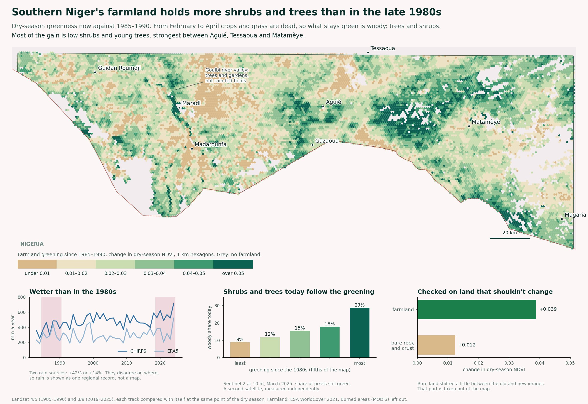
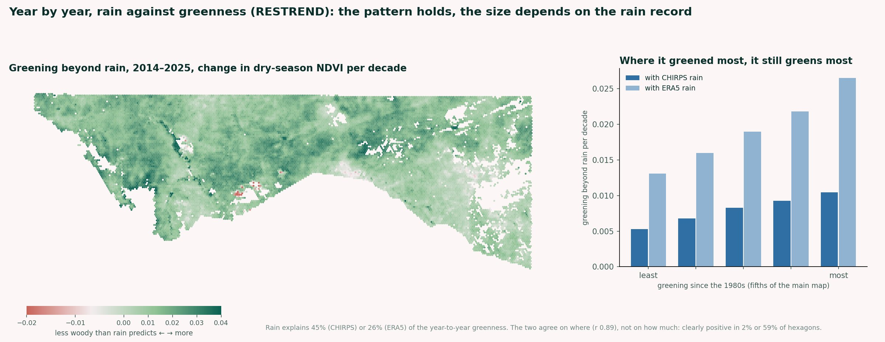
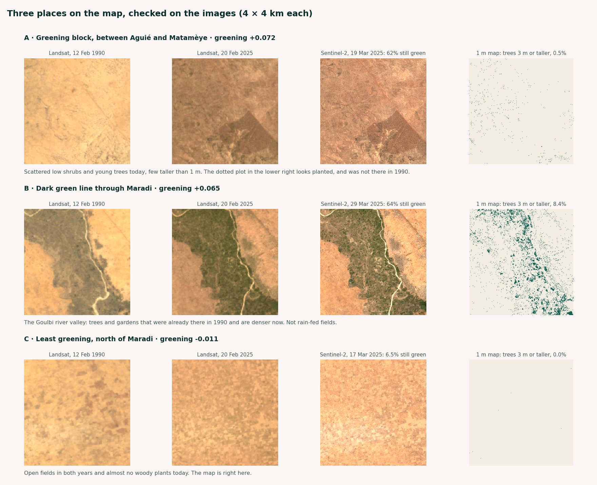

Since the 1980s, farmers in southern Niger have let trees and shrubs regrow on their fields from old roots and stumps. It's called farmer-managed natural regeneration, and it's one of the best-known restoration stories in Africa. I wanted to see what the satellite record shows: where did farmland get woodier since the late 1980s, and how much of it is just the rain coming back after the droughts?
I looked at 17,800 km² of southern Maradi and western Zinder, on the Niger side of the border. This page explains how, what I found, and where the satellites stop.

Open data in
February to April, when crops and grass are dead and what stays green is woody. Clouds and shadows masked.
STAC search · odc-stac · xarray · dask · NumPyEvery scene kept separate until the end. Merging same-day scenes first had hidden real data at scene edges.
Each Landsat track compared only with itself: 1985–1990 images against 2019–2025 images from within 10 days of the same day of the year.
NumPy · pandasNeighbouring tracks agree where they overlap (r 0.8 and 0.6). An earlier stripe from mixing tracks is gone.
Landsat 7 converted to the Landsat 8 scale, fitted on 2019–2021 when both flew. Landsat 5 treated like Landsat 7.
NumPyLandsat 8 reads 0.023 higher on the same land. The fit removes that, with 0.012 of scatter left.
Cropland from WorldCover. Burned areas left out. Change averaged over 1 km hexagons.
geopandas · rasterio · shapelyBare rock and crust shifted +0.012 between the old and new images. That part is taken out of the map.
Sentinel-2 at 10 m for woody cover now, the 1 m canopy map inside single images, and three places looked at by eye.
odc-stac · NumPy · matplotlibWoody share today rises from 9% to 29% from the least to the most greening places.
Results out
The idea is simple. In the dry season crops are harvested and grass is dead, so anything still green is a tree or a shrub. If a field is greener in the dry season now than in the late 1980s, it holds more woody plants. The hard part is making images 35 years apart comparable, which is what most of the steps above are about.
| Result | |
|---|---|
| Farmland greening since 1985–1990, average (dry-season NDVI) | +0.026 |
| Farmland greener than in the late 1980s | 97% |
| Woody share today, least greening fifth of the map | 9% |
| Woody share today, most greening fifth | 29% |
| Rain, 2018–2024 against 1984–1989 | +14% to +42% |
97% of the farmland is greener in the dry season than in the late 1980s, after taking out the small shift that also shows on bare rock. The strongest gains form a block between Aguié, Tessaoua and Matamèye, and a band along the border west of Magaria. The weakest are north of Maradi and around Madarounfa.
In the strongest greening block, 62% of the 10 m Sentinel-2 pixels are still green in March, but the 1 m tree map finds only 1.4% of the ground covered by anything taller than 1 metre. So the gain is mostly low shrubs and young trees. That fits how farmers manage regrowth: they keep a few stems from each root and cut the rest, so many plants stay low.
It is wetter now than in the late 1980s, and that alone makes the land greener. But the rain went up across the whole area, while the greening is concentrated in some places and nearly absent in others. That pattern points to what happens on the land, not rain alone. The two rain sources agree it's wetter, but not by how much (+14% or +42%), and not on where it changed most, so I only use rain as one regional record.
Across the whole area, farmland greened about as much as the grassland and bush around it, slightly less. So the satellites don't show farmland pulling ahead everywhere. The strongest evidence is local: blocks of farmland that are much woodier than their neighbours, which fits published accounts of where regrowth took hold in Maradi and Zinder.
The dark green line through Maradi is the Goulbi valley, with trees and irrigated gardens that were already there in 1990 and are denser now. It's real greening, but not trees on rain-fed fields, so it's marked separately on the map.


This measures how green farmland stays in the dry season, not how many trees there are. It can't say who regrew them, or whether a tree was protected, planted or came back on its own.
| Long record | USGS Landsat Collection 2 Level-2 (Landsat 4, 5, 7, 8, 9) via Microsoft Planetary Computer |
| Today | Copernicus Sentinel-2 L2A via Earth Search |
| Farmland | ESA WorldCover 2021, CC BY 4.0 |
| Rain | CHIRPS v2.0 (Climate Hazards Center) and ERA5 (Copernicus Climate Change Service) via Open-Meteo |
| Fire | NASA MODIS MCD64A1 burned area |
| Trees at 1 m | Meta and World Resources Institute global canopy height, CC BY 4.0 |
| Boundaries | geoBoundaries, ODbL |
The code runs end to end from these sources. If you'd like restoration or tree-cover monitoring like this for a project or a landscape, get in touch.